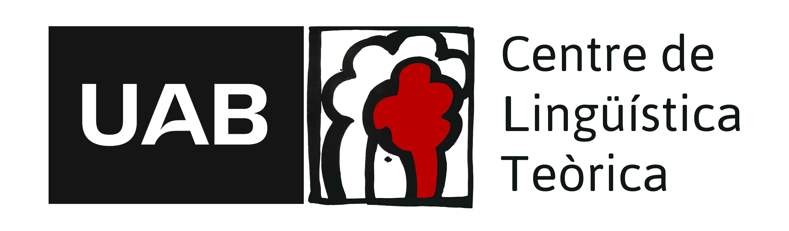

class: center, middle, inverse, title-slide .title[ # Re-Evaluating Phonological Representation in the Early Bilingual Mind: The Case of Catalan Mid Vowels ] .subtitle[ ## 42.º Encontro Nacional da Associação Portuguesa de Linguística ] .author[ ### Gemma Repiso Puigdelliura ] .institute[ ### <p>Universitat Autònoma de Barcelona <br><br> <p></p></p> ] .date[ ### October 2026 ] --- <div style="background-color: #F8FAFC; border: 1px solid #CBD5E1; border-left: 5px solid #0072B2; padding: 12px 14px; border-radius: 6px; margin: 10px 0;"> <div style="color: #0072B2; margin-bottom: 8px; font-size: 0.92rem; font-weight: bold;"> Word-External Hiatus (/V#V/) Realizations </div> <div style="margin-bottom: 10px;"> <div style="font-weight: bold; color: #1E293B; font-size: 0.82rem;"> 1. Canonical L1 Transition (Continuous Speech): </div> <div style="margin: 2px 0 0 10px; font-size: 0.80rem; color: #334155; line-height: 1.35;"> Smooth vocalic transition / modal hiatus (<code>[u.i]</code>):<br> <span style="font-family: monospace; color: #0072B2; font-weight: 600;"><em>espíritu íntimo</em> → [es.ˈpi.ri.tu.ˈin.ti.mo]</span> </div> </div> <div> <div style="font-weight: bold; color: #1E293B; font-size: 0.82rem;"> 2. Regressive L3 Drift (Glottal Insertion): </div> <div style="margin: 2px 0 0 10px; font-size: 0.80rem; color: #334155; line-height: 1.35;"> Epenthetic glottal stop <code>[ʔ]</code> before stressed V2 (<code>[u.ˈʔi]</code>):<br> <span style="font-family: monospace; color: #D55E00; font-weight: 600;"><em>espíritu íntimo</em> → [es.ˈpi.ri.tu.ˈʔin.ti.mo]</span> </div> </div> </div>